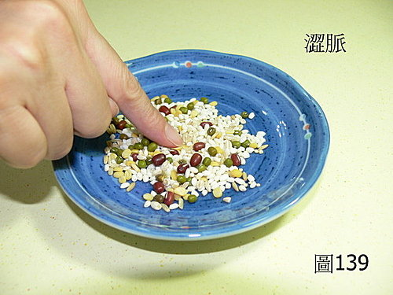

脈理醫理學 33.6：澀脈
作者：陳建元
說明：
〈圖139〉是〝澀脈〞的模型，叫做「豆穀雜糧模型」，在超市買包豆穀雜糧，放在碟子中鋪開，以指反覆抬起按下，在各處輕壓，感受其鋪面到處的參參差差，高低凹凸不平。這樣的指感，就是標準的澀脈。澀脈不只是指脈的跳動頻率不齊，跳勢的高低不齊，無法明顯的摸到一條明確的脈管形狀，或是感到指下多條小細脈如絲，高低跳動不齊，這都可以算是澀脈。

本質和病機：
澀脈是氣血滯澀，流動不順暢，病機是主血瘀，這種澀脈通常偏於沉位。但血瘀的本質有兩種，一種是澀而有力，這是因為血熱、痰壅、氣實‥‥‥等實症病機，導致血脈過度壅塞，太實而流動不暢，故脈澀而有力。一種是澀而無力，這是因為血虛、陰虛、陽虛、氣虛‥‥‥等虛損，導致血脈氣血運行無力，太虛而流動不暢，所以脈澀，這種澀脈，必然是澀而無力。
另外澀脈尚有一個意義是主燥，乃是津血枯乏、不足或津血失潤而化燥的意思，這種澀脈通常偏於浮位（尤其在第2層）。
兼脈：
澀脈是指一種脈形，無關脈寬或脈位的高低，故可兼多種脈。澀浮是津血枯乏、不足，或血虛化燥、或津虛化燥（或兼血瘀）。澀沉是氣虛而血瘀。澀浮細是陰虛而血瘀。澀沉細陽虛而血瘀。澀而無力是因虛致瘀。澀而有力是因實症致瘀。澀弦是氣滯血瘀。澀散為元氣散渙不斂大虧而血瘀。澀滑是因痰瘀相夾。澀緩是因水濕停留而瘀。澀遲細沉是陽虛帶寒而血瘀。澀數實大是實熱熬血成瘀。澀黏是毒瘀相夾。
六部澀脈：
右寸澀：浮澀為肺燥、為燥咳、為燥喘、沉澀為肺中有瘀、為肺系有瘀、腫瘤包塊。
右關澀：浮澀為胃陰不足而腹悶、為消化不良。沉澀為脾虛運化不良夾瘀、腫瘤包塊。沉澀弦是脾胃有瘀、或脾系有瘀。
右尺澀：浮澀為腎陽不足兼瘀而腰酸腿軟、為大便便秘或腹瀉、為陽痿、為手冷足冰。沉澀為腎陽脈有瘀、為腫瘤包塊。
左寸澀：浮澀無力為多汗、為怔忡、為胸悶、為短氣、為頭暈。沉澀為心系或血管有瘀、腫瘤包塊、心痛梗塞。
左關澀：浮澀無力為血虧夾瘀而頭暈、而目眩、而指甲薄脆、而膽小、而血不營筋而筋肉酸麻或抽掣、而肝風肌肉瞤動跳動或不自主抽動。沉澀為肝膽、肝系有瘀、腫瘤包塊。
左尺澀：浮澀為腎陰不足夾瘀、為不孕、為陰癢乾燥、為腰酸腿軟、為頭暈、為消渴。沉澀為腎、腎系、子宮、泌尿生殖系統有瘀、腫瘤包塊。
治療藥物：
澀而有力，是實症的血瘀，下各經活血藥即可（因為氣行則血行，所以一般會兼下些各經理氣藥）；澀而無力，是虛症的血瘀，是因虛致瘀，所以補虛藥與活血藥同下。後面只記載各經活血藥，補虛藥參看 33.7 條虛脈那篇。
肺脈：紅花、鬱金。
脾脈：當歸、澤蘭、三稜、莪朮、乳香。
腎陽：雞血藤、紅藤、益母草、桂枝。
心脈：桃 仁、蘇木、延胡索、乳香、鬱金。
肝脈：桃仁、三稜、莪朮、地鼈蟲、當歸、乳香、沒藥、薑黃。
腎陰：雞血藤、紅藤、益母草、桂枝。
……………………………………………………………………………………………
或問：古人說的「如刀刮竹」可真是抽象得要緊，難以領會。
答：
「如刀刮竹」是單指節率上的澀，譬如拿水果刀，刀面45度去刮白鐵管，會發現刷一聲不會蹇塞停頓，但若是刮竹子（尤其是那種青色的，不是已經放乾的那種），就會發現刀肉會因有時咬進竹肉中，不會一刮到底，中間會蹇塞停頓，所以這句「如刀刮竹」，其實是指脈鼓動的節率「不一致」而已（中間會有停頓不暢的意思）。另外一句「如雨沾砂」，是指脈位會参差不一致，你看初下雨的時候，雨點怎麼打在地上的？是不是東兩點、西三點，三三兩兩参差不調，這就是像我們反覆按豆穀雜糧模型，那種脈位會参差不一致的感覺。節率不一致是澀脈，脈位参差不一致也是澀脈，有其中的一樣就算澀脈了，兩樣都有當然也算澀脈。
或問：請問老師，那浮細澀該如何體會？是浮細而感覺不到一條連續的脈管嗎？
答：
浮細已經把脈管固定住，所以浮細澀是指脈浮細，但節率中間有蹇塞頓停的現象，並不順暢而已，所以是感覺得到一條連續的脈管，只是脈的跳動有中斷，像唱片跳針一樣。這個澀是怎麼來的？譬如浮細可以是陰虛，陰虛則容易有火熬血，日久血會成瘀，所以可見浮細澀。譬如明顯外感時，肺脈浮細澀有力，這時解讀又不一樣了，浮是外感，細是這個人的氣血不足，澀是因為氣血不足的人又外感，身體的負荷有點吃重，所以氣血流動不順暢，自然又帶出一個澀脈來。
或問：
請問老師，您說的澀脈〝鼓動的節率「不一致」（中間會有停頓不暢的意思）〞，是指脈跳動有點忽快忽慢，頻率不固定，兩次脈波之間間隔的時間不固定的意思嗎？那心律不整表現出的脈象，以節率來說是不是都可以說有澀脈的成分？那如果脈象頻率不固定，同時脈搏力量也隨之不固定（會有停頓然後力量忽大忽小的感覺），這樣算是澀脈的重證嗎，還是算澀脈兼夾哪些其他脈（先忽略脈型浮沉等面向，只看頻率和力量變化這兩點的話）？
另外，同是脈搏頻率上的異常，想請教老師澀脈和促脈、結脈、代脈該怎麼鑑別？病機又有什麼差異？謝謝老師！！
或問：
您好，謝謝您的解答，不過小的我又產生新的疑問了。節率中間有蹇塞頓停的現象，把脈有時會遇到「奇脈（Pulsus paradoxus）」的現象。這裡是指的是西醫名詞，指吸氣時脈搏明顯減弱甚至消失，呼氣時又出現或恢復原狀的現象。原因是因為吸氣時肺會充血導致回流到心臟的血液變少。請問，這是屬於澀脈嗎？又，這是屬於結代脈的一種嗎？另，節率有頓停的現象，如房室阻斷（AV block）之類，也是一樣算是澀脈？或是結代脈嗎？
另，有些人從小就有天生的節率不順暢，但沒有任何的症狀，這在中醫脈診上有臨床上的意義嗎？可以當成血瘀的指標而考慮加些化瘀藥嗎？謝謝您如此耐心不厭其煩的指導。
或問：
陳老師！我又來問問題了！這次的問題有：
1. 濇滑脈的表現是否為──跳動有斷但動勢為滑，還是？
2. 若跳動不一致，也為濇脈的表現，那怎麼與結促代脈還有鬼祟脈區隔。請老師賜教！
答：
1. 一般而言，澀脈和鬼祟脈不一樣，澀脈雖節率會中斷，停停頓頓的不流暢，脈位也會左右跳，但基本上10分鐘後再去把同一個病人，整個型態還是和10分鐘前一致的；鬼祟脈則相反，前一分鐘是洪大脈夾幾下澀脈，幾分鐘後變成細數脈而沉，忽然又變弦滑，翻來覆去，忽大忽小，無法定案，不知以何為準。見脈理醫理學 55：鬼祟脈。
2. 心律不整或心臟的跳動，和中醫裡的澀脈不對等，也就是說心律不整時，未必有澀脈，而心律正常時，也未必無澀脈，甚至在6部脈之中，也有可能只出現1～2部有澀脈，其餘是正常脈。為什麼會這樣呢？因為脈跳牽涉的因素太多，不只心臟跳動一樣問題而已，血管的硬度、血流的黏度、神經對血管的管控、神經又受內分泌和大腦的影響、血管上脂肪墊的軟硬度、表皮肌肉的彈性‥‥‥。所以心臟跳動未必能和澀脈等量齊看、有時候心臟輕微的不整，卻被以上諸因素給修正掉了，並不出現澀脈，有時候心率正常，但上述因素的綜合後，卻可出現澀脈。以脈法來看，出現在心脈的澀脈，可代表心率不整，但澀脈必有兼脈，譬如是沉細澀，可知是心陽不足所導致的澀脈，此時，澀脈不是重點，補足心陽自然心率恢復正常；相反的，如果是澀大有力，可知瘀血是主因，從瘀血下手，心率便能恢復正常。
3. 澀脈＋遲脈→→叫做結脈→→一般表示兼有寒性病機在內。或表示兼有氣滯壓脈的病機在內（如大實熱證者，有時脈反而結脈）。
澀脈＋數脈→→叫做促脈→→一般表示兼有熱性病機在內（如癰疽）。或表示兼有虛性病機在內（虛損到後期，人體越虛脈越數）。
所以促脈、結脈都宜四診九大合參，才不會被騙。
澀脈而跳動停頓有規律的，譬如跳5下停一下，或跳3下後固定停一下，叫做代脈，病機和結脈促脈相仿。
是指脈跳動有點忽快忽慢，頻率不固定，兩次脈波之間間隔的時間不固定的意思嗎？那如果脈象頻率不固定，同時脈搏力量也隨之不固定（會有停頓然後力量忽大忽小的感覺），這樣算是澀脈的重證嗎？
答：
就像正常打拍子時，有一定的速率在打，而中間過程有三三兩兩的幾拍漏打的意思。明顯的忽快忽慢，忽大忽小如果在正常人，是鬼祟脈；如果是兼散漫無根底，而且是久病長期臥床不起者，則是十怪脈之類的預後不良。
另，有些人從小就有天生的節率不順暢，但沒有任何的症狀，這在中醫脈診上有臨床上的意義嗎？可以當成血瘀的指標而考慮加些化瘀藥嗎？
答：
要看脈的何部有何異樣，如果沒異樣，是身體的其他器官代償掉了，算是正常的變異。如果脈有異樣，就有澀脈的問題存在，但澀脈可由氣血諸虛第一病機而來，這時，澀脈只是標的第二病機，並非本質，所以見澀脈，不一定活血化瘀為主。
1. 濇滑脈的表現是否為──跳動有斷但動勢為滑，還是？
2. 若跳動不一致，也為濇脈的表現？
答：
兩者都是滑澀脈。如果是滑明顯，澀不是那麼嚴重，叫做滑澀脈，是因為痰濕而帶出瘀塞；如果是澀明顯，滑不是那麼嚴重，叫做澀滑脈，是因為血瘀而濕停痰聚。
【引用請先來信告知徵求同意，若有涉及販售營利等商業行為，版權所有拷貝盜用必究。】
【藥王脈學講壇】http://blog.xuite.net/drjychen/twblog